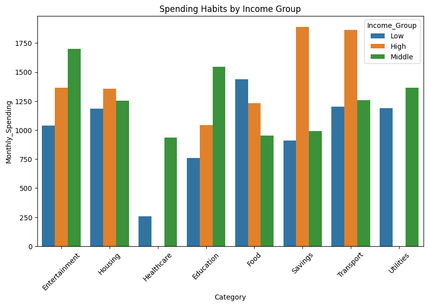
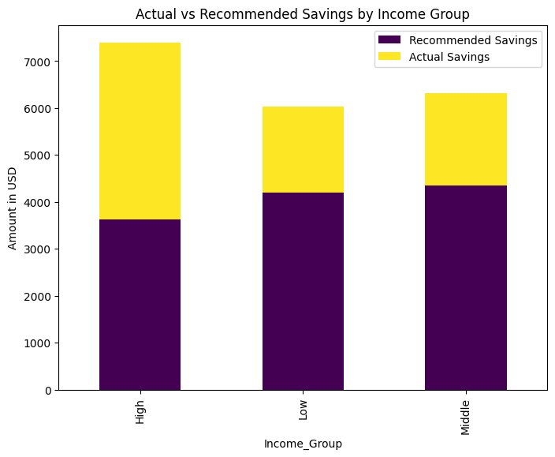
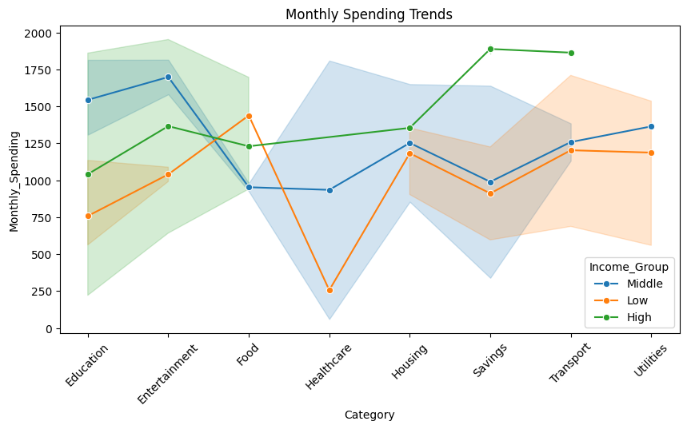
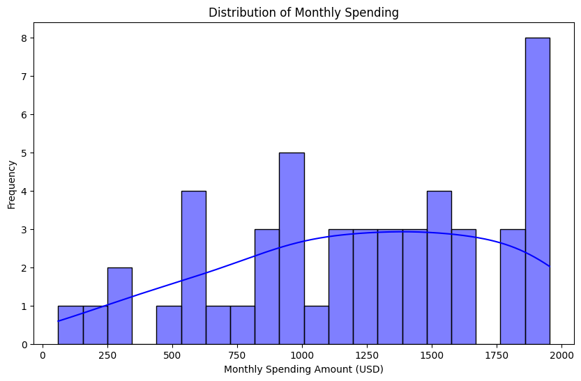

Every month, people earn and spend money, but many do not track where it goes. This project explores how individuals allocate their income across essential and discretionary categories like housing, food, transport, education, entertainment, healthcare, and savings. Understanding spending habits helps in financial planning, ensuring better budgeting and long-term stability. By analyzing these patterns, we can identify areas for optimization and smarter money management. A well-planned budget reduces financial stress and helps individuals achieve their financial goals.
People with different income levels have distinct spending habits. Low-income earners prioritize essentials like housing, food, and utilities, with limited spending on savings and entertainment. Middle-income individuals balance necessities with discretionary expenses, allocating moderate amounts to savings and leisure. High-income earners have greater flexibility, spending significantly on savings, entertainment, and lifestyle choices. The bar chart visually compares these spending patterns, showing how financial priorities shift across income groups. Understanding these differences helps in financial planning and effective budgeting.
Many people struggle to save the recommended 20% of their income due to rising living expenses. High-income earners save more than the suggested amount, allowing for better financial security. Middle-income earners often meet the savings recommendation but may face challenges with unexpected costs. Low-income earners save significantly less due to high essential expenses, making long-term financial stability difficult. The stacked bar chart visually compares actual vs. recommended savings across different income groups, highlighting gaps in financial planning.
Over time, inflation has raised the prices of essential goods and services, affecting how people allocate their income. As costs increase, individuals must adjust their budgets to manage rising expenses. Housing, food, and healthcare have become more expensive, impacting lower-income groups the most. Savings have declined for many as more income is spent on necessities. Transportation and utility costs have also risen, requiring financial adjustments. The line graph visually represents these trends, showing how different income groups respond to inflation.
saturday and Sunday have more high-spending outliers, likely due to weekend shopping, dining, and leisure activities. Monday also has notable spending, possibly for rent, bills, and groceries at the start of the week.Wednesday sees fewer high-value transactions, indicating lower spending midweek. Spending is more random on weekends, meaning not everyone follows the same pattern—some people spend a lot, while others keep it low. Overall, weekend spending is higher for some individuals, particularly for discretionary expenses. However, spending habits vary, with some preferring to spend more during weekdays.
Analyzing spending patterns reveals how individuals allocate their income across essential and discretionary expenses. Different income groups prioritize spending differently, with low-income earners focusing on necessities, while high-income individuals allocate more to savings and lifestyle choices. Inflation has significantly impacted budgeting, forcing people to adjust their expenses in categories like food, housing, and transportation. Savings trends indicate that many struggle to meet the recommended 20% savings target, highlighting financial challenges, especially for lower-income groups. Tracking expenses, reducing unnecessary spending, and using budgeting tools can help individuals improve financial stability. Smart financial planning ensures better money management, enabling people to balance their needs, wants, and future security effectively.